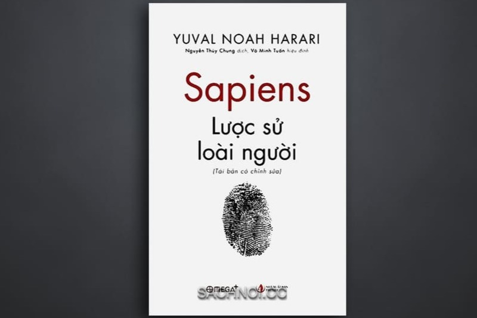

Lược Sử Loài Người
Yuval Noah Harari

Sapiens: A Brief History of Humankind (bản tiếng Việt: Sapiens: Lược Sử Loài Người) của Yuval Noah Harari là cuốn sách nhìn toàn bộ lịch sử loài người ở quy mô rất lớn: từ săn bắt hái lượm đến thế giới hiện đại
Ý tưởng trung tâm của cuốn sách là:
Loài người thống trị Trái Đất không phải vì mạnh nhất, mà vì có khả năng cùng tin vào những câu chuyện tưởng tượng và hợp tác linh hoạt với số lượng lớn.
Đó có thể là:
• tiền
• quốc gia
• tôn giáo
• luật pháp
• nhân quyền
Những thứ này không tồn tại như núi hay sông, nhưng vì rất nhiều người cùng tin, chúng trở thành sức mạnh tổ chức xã hội
3 cuộc cách mạng lớn trong sách
• Cách mạng nhận thức (khoảng 70.000 năm trước)
Con người bắt đầu có ngôn ngữ phức tạp, trí tưởng tượng, thần thoại — từ đó hợp tác ở quy mô lớn.
• Cách mạng nông nghiệp (khoảng 10.000 năm trước)
Theo Harari, đây không hẳn là “bước tiến hạnh phúc”.
Nó giúp dân số tăng mạnh, nhưng khiến nhiều cá nhân sống cực hơn, lao động nặng hơn.
• Cách mạng khoa học (vài trăm năm gần đây)
Khi con người chấp nhận rằng mình chưa biết đủ, khoa học bùng nổ và kéo theo đế chế, công nghiệp, chủ nghĩa tư bản
Điều khiến cuốn này nổi bật
Harari liên tục đặt những câu hỏi khó chịu nhưng rất mạnh:
• Tiền có thật không, hay chỉ là niềm tin tập thể?
• Con người ngày nay có hạnh phúc hơn tổ tiên không?
• Nếu ta có thể chỉnh sửa sinh học, liệu “con người” trong tương lai còn là con người hiện nay không?
Nếu tóm cực ngắn
Cuốn sách này muốn nói:
Lịch sử loài người phần lớn là lịch sử của những niềm tin chung.
Hay nói đơn giản hơn:
Con người không chỉ sống trong tự nhiên — mà sống trong những câu chuyện mình cùng nhau tạo ra.
Nếu bạn thích mạch triết học và lịch sử kiểu này, Sapiens thường rất hợp vì nó nối được từ tiến hóa, xã hội, đến ý nghĩa của văn minh.